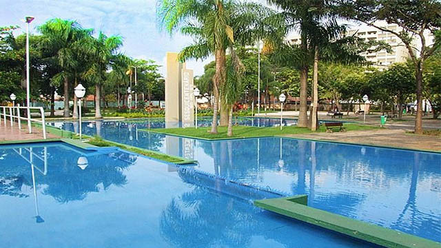
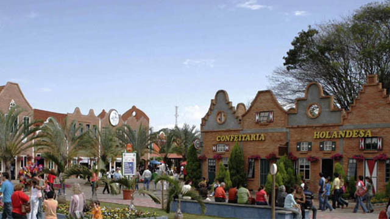
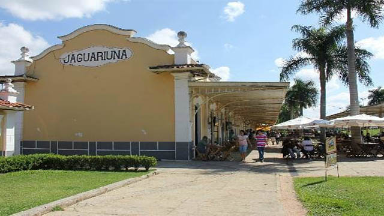
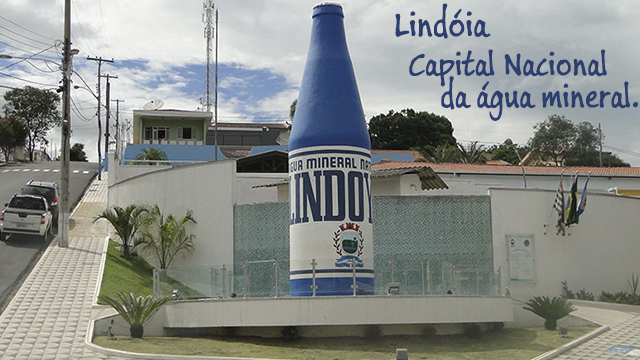
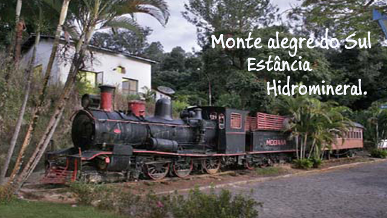
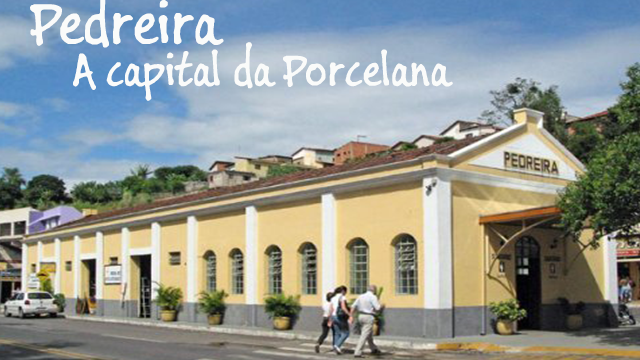

Circuito das Águas, a forma diferente de descobrir a natureza, história, a riqueza cultural e a gastronomia!
Os grandes Roteiros Turísticos do Interior Paulista levarão vocês a uma viagem por cidades aconchegantes, charmosas, com paisagens incríveis, montanhas, rios, lagos, nascentes, e lugares marcados pelas suas tradições.
Em qualquer um desses itinerários, você terá a oportunidade de viver uma experiência cheia de imaginação e diferente, ao mesmo tempo em que poderá aproveitar para conhecer a riqueza cultural.
Localizada na Serra da Mantiqueira, em meio a vales e montanhas, o Circuito das Águas Paulista é composto por nove cidades: Holambra, Jaguariúna, Pedreira, Amparo, Monte Alegre do Sul, Serra Negra, Lindoia, Águas de Lindoia e Socorro com vales, cachoeiras com a abundância de águas e excelente qualidade de seus benefícios terapêuticos das fontes de águas minerais, comercio de malhas, couros, doces, queijos, vinhos, licores, e ótimos aguardentes.
Para prática de esportes no Turismo de Aventura nas mais diversas modalidades. Com influência da colonização Italiana e a herança da cultura do café nesta região, vamos conhecer um pouco mais sobre essas cidades e veja o que faz do Circuito das Águas um diversificado e agradável passeio.
Tendências e Oportunidades de Negócios, o Circuito das Águas encontra-se preparado para receber eventos de grande porte, estando alinhado com o movimento que é vivido pelo restante do país, colocando-o até mesmo como grande concorrente com relação a muitos estados no Brasil.
Destacam-se pela a alta estrutura para grandes eventos como convenções, feiras, exposições, congressos corporativos, e turismo de negócios. Viaje por um dos mais belos circuitos turísticos do Interior Paulista.
Cidades que fazem parte do roteiro Circuito das Águas Paulistas - SP
Águas de Lindóia/SP
Águas de Lindoia é ideal para passeios românticos.Conhecida como um dos maiores Leia mais...
Amparo/SP

Amparo a Capital Histórica do Circuito das Águas PaulistaLeia mais...
Holambra/SP

Holambra a beleza e diversidade de suas flores, aliada à forte influênciaLeia mais...
Jaguariúna/SP

Jaguariúna é conhecida como a Capital do Cavalo, pelo rodeio. Entre as atraçõesLeia mais...
Lindóia/SP

Localizada no coração do circuito das Águas Paulista, A Estância HidromineralLeia mais...
Monte Alegre do Sul/SP

Monte Alegre do Sul é uma das cidades mais encantadoras do Circuito das Águas PaulistaLeia mais...
Pedreira/SP

Conhecida como “Capital da Porcelana” devido a sua forte economia terLeia mais...
Serra Negra/SP
Com lindos parques, praças e jardins, um clima de montanha ricamente oxigenado temperaturaLeia mais...
Socorro/SP
Socorro, uma encantadora cidade turística, localizada junto à Serra da MantiqueiraLeia mais...